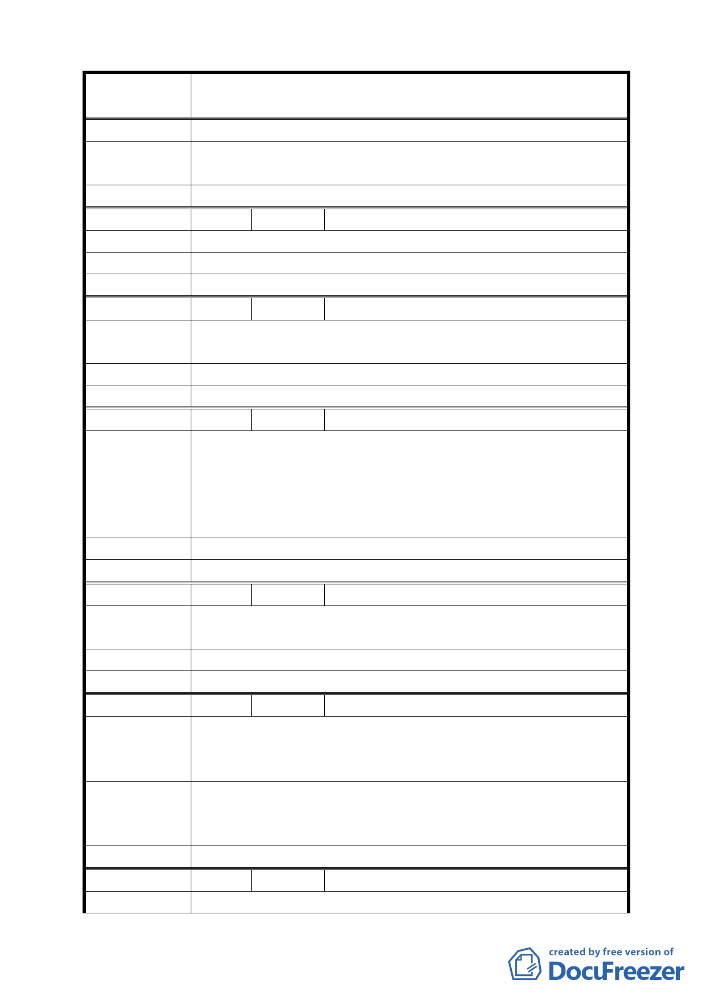

案
名
修訂臺北市信義區逸仙段 3 小段 294-4 地號第 4-1 種
住宅區（特）土地使用分區管制計畫案
陳情理由
建議辦法
修正變更內容第二項為依現行法規規定本基地沿仁愛路光
復南路側應設置騎樓或退縮 3.64 公尺之無遮簷人行道。
委 員 會 決 議 維持原公展計畫。
編 號 ７ 陳情人 馮意蘭
陳 情 理 由 建蔽率改為 60％，但是依然比目前住戶之每戶產權面積小。
建 議 辦 法 請以原地面之樓層產權面積加上騎樓才利於本大樓之重建。
委 員 會 決 議 維持原公展計畫。
編 號 ８ 陳情人 高姝香
陳情理由
每日行經仁愛路與光復南路人行道上的路人很多，如能設有
騎樓俾使光復國小的學童與行人能有遮風避雨的地方。
建 議 辦 法 建議能設有騎樓。
委 員 會 決 議 維持原公展計畫。
編 號 ９ 陳情人 高泉亮
一、一致性：由延吉街至臺北市政府常有早上陳操老人可有
避雨遮風之利。
陳 情 理 由 二、跨年會時亦可活用。
三、里民學生上班、上課皆可受益。
四、考量 30 年後的長遠發展與規劃。
建 議 辦 法 沒設置騎樓提請高建蔽率與容積率（並支付適當補償金）
委 員 會 決 議 維持原公展計畫。
編 號 １０ 陳情人 蔣沈凌雲
陳情理由
本案尚華仁愛大樓為九二一震災戶至今已近 8 年若得設置
騎樓可使住戶整合有更大空間容易成功以免危害公共安全。
建 議 辦 法 本案基地沿仁愛路與光復南路側應設置騎樓。
委 員 會 決 議 維持原公展計畫。
編 號 １１ 陳情人 蔡文鎮
依修正內容第二項所載，應退縮 3.64 公尺人行道，意是不
陳 情 理 由 得設建騎樓，此舉限制住戶整合彈性空間，勢必增加整合重
建困難。
如修正變更內容第二項改為依現行法規規定本基地沿仁愛
建 議 辦 法 路光復南路側應設置騎樓或退縮 3.64 公尺之無遮簷人行
道。
委 員 會 決 議 維持原公展計畫。
編 號 １２ 陳情人 尹俊富里長
陳 情 理 由 本修正變更內容，涉及本里居民生活活動與都市建築之美
13